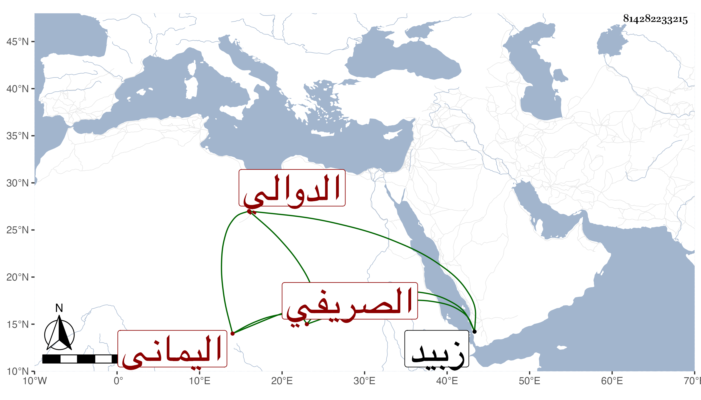

0902Sakhawi.DawLamic.ITO20230111-ara1.EIS1600.814282233215
Biography ID: 814282233215
54
محمد بن أحمد بن عمر بن أحمد بن عبد الله الجمال المدعو بالظاهر الصريفي الدوالي اليماني والد أحمد الماضي ويعرف كسلفه بابن جعمان وهو خال الفقيه إبراهيم بن أبي القسم شقيق أمه وهو أسن من ذاك بعشر سنين وتأخر عنه إلى الآن . ولد سنة اثنتي عشرة وثمانمائة ببيت ابن عجيل وهو فقيه متعبد متجرد ممن درس التنبيه والبهجة وهي محفوظة تفقه على صهره أبي القسم بن جعمان وهو على أبي صاحب الترجمة وهو على إبراهيم جد إبراهيم بن جعمان وقد أخذ عنه في العربية وفيهما عن الطيب الناشري وحضر في صغره دروس أبيه ، وحج في سنة تسع وخمسين ولقي شخصا روميا فقرأ عليه في عوارف المعارف وأقرأ وأفتى وانتفع به جماعة أشهرهم ابنه الشهاب أحمد مفتي زبيد وهو الآن مقيم ببيت ابن عجيل ولم يجاوزها لغير الحج نفع الله به .
